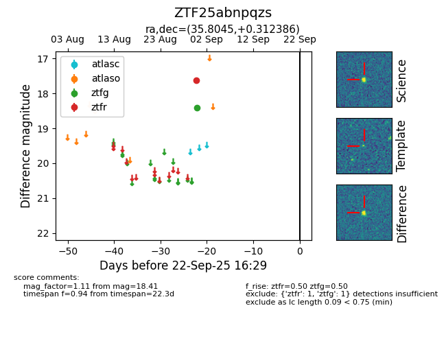

FINK: ZTF25abnpqzs
Lasair: ZTF25abnpqzs
ALeRCE: ZTF25abnpqzs
ZTF25abnpqzs (ztf,fink)
equatorial (ra, dec) = (35.8045,+0.31239)
galactic (l, b) = (165.4779,-54.79290)

last ztfg=18.41, ztfr=17.63
1 ztfg, 1 ztfr detections